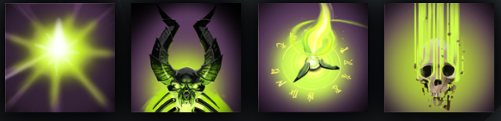

PUGNA
HISTORY
In the realm of Pugna's birth, near the vents of the Nether Reaches, there stood a lamasery devoted to the Arts of Oblivion, which drew its power from the nether energies. The Grandmaster of the temple compound had himself passed into Oblivion several years prior, leaving his academy without a leader. From the moment of their master's death, the regents of the temple began rites of divination to identify their master's reincarnation, and eventually all signs converged on the immediate neighborhood. Several villages squatted in the shadow of the temple, their alleys and plazas full of the laughter of squalling children. Pugna, a mere thirteen months of age, was but one candidate among the local brats, and on the appointed day he was presented at the temple alongside two other promising tots. The lamas offered a jumble of worn relics to the children, treasured possessions of their former grandmaster. One boy reached for a porphyry wand that had belonged to the lama...and put it in his nostril. An impish girl pulled out an amulet that had also been the lama's, and immediately swallowed it. Pugna regarded the other two coolly, gave a merry laugh, and blasted them with gouts of emerald flame, reducing them to ashes in an instant. He then snatched up the wand and amulet, saying 'Mine!' The regents hoisted the beaming Pugna on their shoulders, wrapped him in their grandmaster's vestments, and rushed him to the throne before his mood could change. Within five years, the temple itself was another pile of ash, which pleased Pugna to no end.
ABILITIES
PAIRD WELL WITH
AXE
SHADOW DEMON
BANE